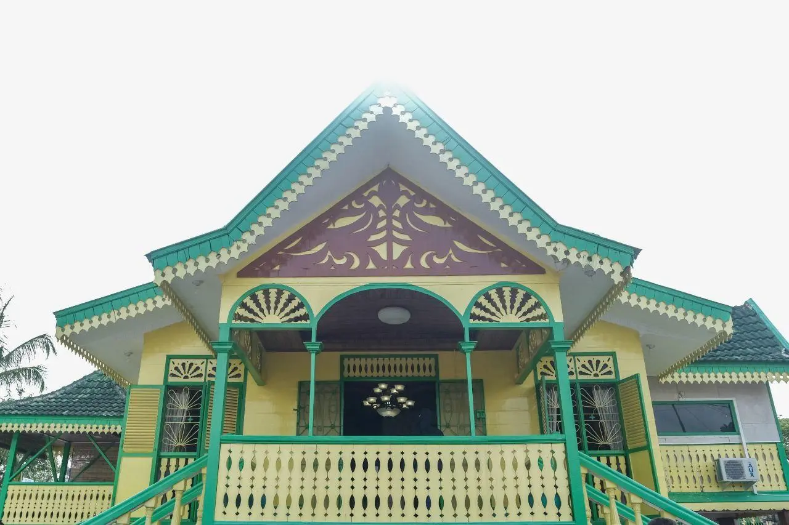

Rumah Adat Puri Melayu Sri Menanti adalah salah satu warisan budaya yang berasal dari Kesultanan Negeri Sembilan, Malaysia. Rumah ini dikenal sebagai salah satu bentuk arsitektur tradisional Melayu yang memiliki nilai historis dan artistik yang tinggi. Didirikan pada abad ke-18, Puri Melayu Sri Menanti menjadi simbol kekuasaan dan identitas budaya Melayu di wilayah tersebut. Bentuknya yang megah dan elegan mencerminkan status sosial serta kemakmuran kerajaan pada masanya.
|  |
Secara arsitektural, Puri Melayu Sri Menanti memiliki bentuk bertingkat yang terbuat dari kayu keras, seperti kayu cengal. Atap rumah ini berbentuk limas bertingkat dengan puncak yang meruncing, yang dikenal sebagai "atap lontik." Rumah ini juga ditopang oleh tiang-tiang tinggi yang mengangkat lantai rumah jauh di atas permukaan tanah. Bentuk ini tidak hanya memberikan kesan agung, tetapi juga berfungsi praktis untuk melindungi rumah dari banjir dan serangan binatang buas.
Rumah Adat Puri Melayu Sri Menanti dibangun pada abad ke-18 di Kesultanan Negeri Sembilan, Malaysia. Rumah ini menjadi simbol kekuasaan dan identitas budaya Melayu di wilayah tersebut. Sebagai pusat pemerintahan dan tempat tinggal sultan, Puri Melayu Sri Menanti mencerminkan kemakmuran dan kebesaran kerajaan pada masanya. Seiring berjalannya waktu, rumah ini telah menjadi bagian penting dari warisan budaya dan sejarah Malaysia.
Puri Melayu Sri Menanti memiliki beberapa ciri khas yang membedakannya dari rumah adat lainnya. Salah satu ciri yang paling menonjol adalah atap lontik yang menjulang tinggi, memberikan kesan megah sekaligus fungsional untuk sirkulasi udara. Rumah ini juga dihiasi dengan ukiran kayu yang rumit dan detail, menampilkan motif flora dan geometris yang kaya akan makna budaya. Ruang-ruang di dalam rumah dibagi menjadi beberapa bagian penting seperti ruang tamu, ruang tidur, dan ruang keluarga, yang didesain dengan tata letak yang mengedepankan kenyamanan serta privasi penghuni.